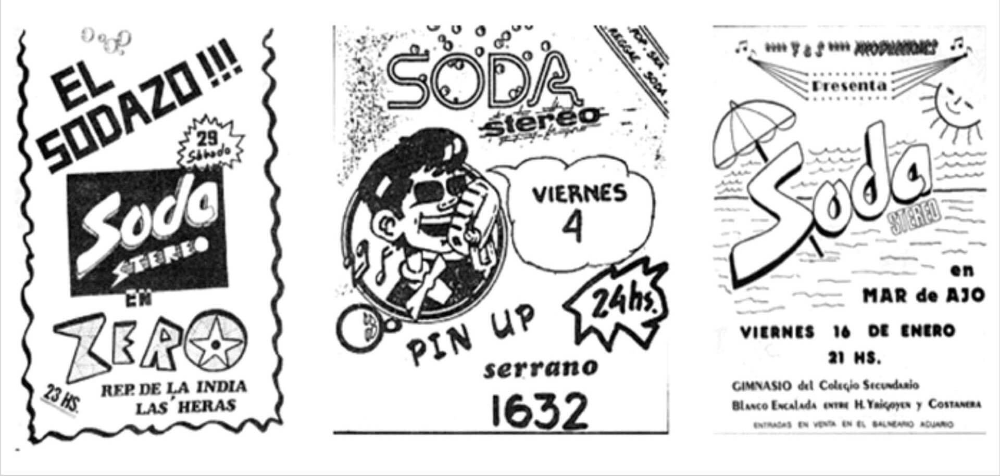
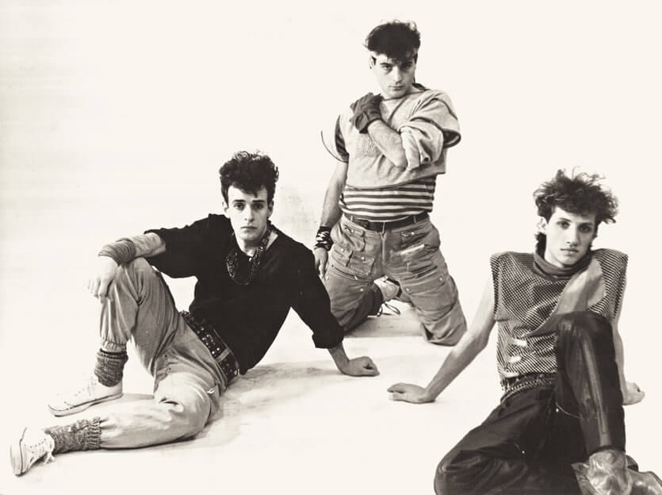
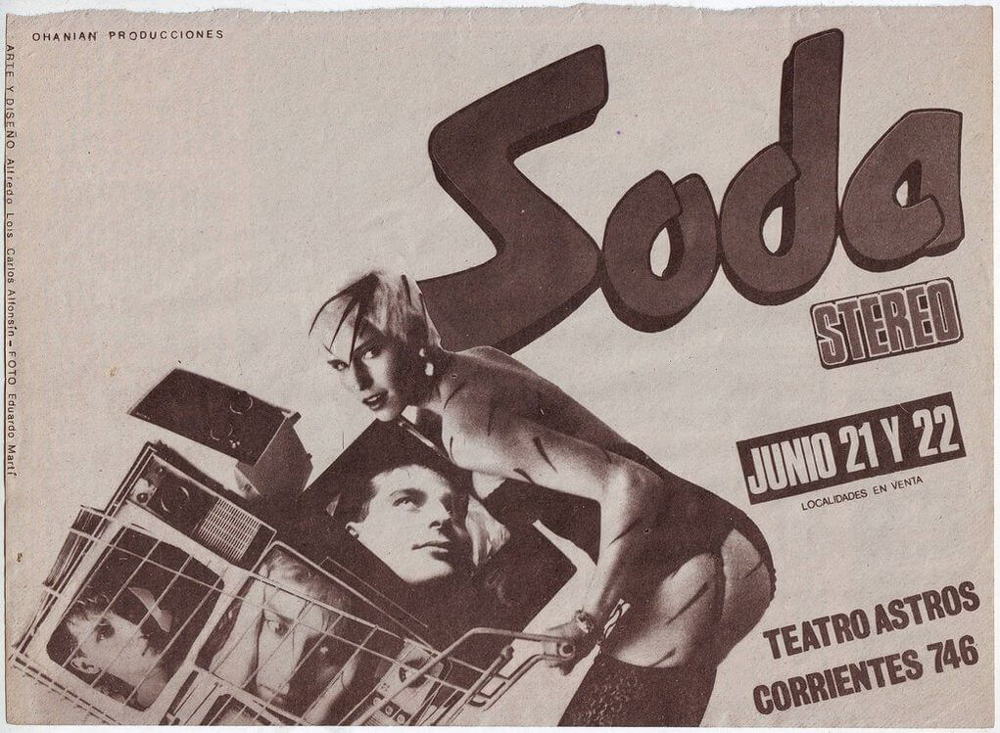
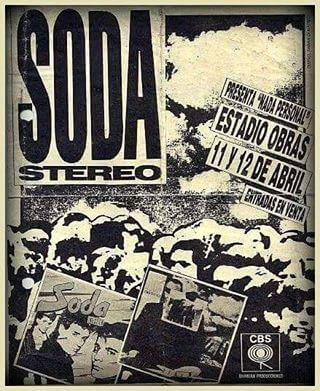

-
INTRO
Soda Stereo es una de las bandas más importantes e influyentes en toda la historia del rock argentino y latinoamericano, con una popularidad masiva en todo el continente desde mediados de los años '80 y hasta la actualidad. A lo largo de su extraordinaria carrera consigue todo tipo de records históricos y la magia que producen sus canciones sigue más vigente que nunca, tal como demuestran las millones de reproducciones vía streaming, las ventas de discos y el suceso del espectáculo “Sép7imo día” del Cirque du Soleil, dedicada al grupo en 2017. Desde el comienzo, cuando da sus primeros pasos, Soda tiene la visión de ocuparse de detalles que pocos artistas argentinos toman en cuenta, como el buen sonido, la puesta en escena, la imagen en vivo y en fotos, lo que sumado a su producción musical los lleva por una trayectoria siempre ascendente y con características propias de pionero. El grupo primero recorre la ciudad de Buenos Aires y alrededores, luego todo el territorio nacional y, una vez consagrado como incuestionable número uno, prueba suerte en el exterior, algo nunca encarado por un conjunto de rock latinoamericano. El resultado es tan positivo que Soda Stereo impone el rock en castellano en todo el continente. Primero con influencias pop, luego dark y funk, Madchester y trip-hop, rock alternativo y electrónica, incluso revisitando el viejo rock argentino e internacional, siempre con elementos musicales de vanguardia y de rock clásico, el resultado es único y original. En definitiva, una combinación tremendamente personal que marcó a tres generaciones de fans y músicos. Gustavo Cerati, Zeta Bosio y Charly Alberti imponen canciones, ropas, cortes de pelo, formas de componer, tocar y cantar, incluso maneras de encarar el inmenso negocio que los rodea. A lo largo de toda su carrera, Soda Stereo crece hasta límites insospechables, tal como demostró la gira “Me Verás Volver” en 2007, el espectáculo del Cirque du Soleil en 2017 y este nuevo desafío bautizado “Gracias Totales”. Soda no se detiene.
-
1982

(1982) Los primeros pasos Soda Stereo nace a principios de 1982 con la unión de Gustavo Cerati, Zeta Bosio y Charly Alberti, tres apenas veinteañeros que buscan armar un grupo con influencias de la novedosa corriente new-wave de Inglaterra y Estados Unidos, muy poco explorada en Argentina. Zeta y Gustavo se conocen desde 1979 cursando la carrera de Comunicación en la Universidad del Salvador, donde forjan una gran amistad ya que comparten los mismos gustos musicales. También tocan juntos en el grupo de covers The Morgan (por donde incluso pasa Andrés Calamaro) y otro llamado Stress. Se proponen armar una banda con composiciones propias y en castellano. La idea toma forma durante el verano y se concreta en marzo, al conocer casi de casualidad a Charly. Se juntan y de inmediato hay química entre ellos. Durante todo el año se dedican a ensayar con entusiasmo, intensidad y la convicción de tener algo único entre las manos.
-
(1983) La escena under y un contrato discográfico
(1983) La escena under y un contrato discográfico En julio de 1983 surge la posibilidad de tocar en una discoteca y Soda Stereo da su primer recital, iniciando una serie de presentaciones en el flamante circuito under de Buenos Aires, a la par de otros artistas insignias de un recambio generacionl del rock argentino, ya sobre el final de la dictadura militar y la vuelta a la democracia. Por ejemplo Virus, Sumo, Los Twist, Metrópoli, La Sobrecarga y Diana Nylon. Al tercer show, un importante productor les ofrece grabar para el sello CBS y firman contrato.
-
(1984) El álbum debut
Varios meses después de firmar contrato, Soda finalmente logra grabar su álbum debut, titulado “Soda Stereo”, a secas, con un sonido nuevo, fresco y original, altamente contagioso, tal como demuestran los hits “¿Por qué no puedo ser del jet-set?”, “Sobredosis de TV”, “Te hacen faltan vitaminas” y “Dietético”. Se edita en agosto de 1984, las canciones suenan con alta rotación en las radios, la prensa los celebra como grupo revelación del año, y los recitales se multiplican por las discotecas del conurbano, muchas veces con dos actuaciones en la misma noche. La presentación oficial es el 14 de diciembre en el Teatro Astros, a sala llena y con una imaginativa puesta en escena con televisores viejos de fondo.
-
(1985) Consagración nacional
En el verano del "85, Soda Stereo realiza su primera gira con 14 fechas, participa en el Festival Chateau Rock ante 15 mil personas, y en junio vuelve a tocar en Capital, llenando cinco Astros en tres días, con otra escenografía inolvidable. También da una actuación memorable en el Festival Rock & Pop en el estadio Vélez, junto a INXS, Nina Hagen, Charly García, Sumo y Virus. La banda da por conquistada la Capital y decide apuntar al interior del país, donde la consagración rápidamente es total, y pone la mira en Chile con vistas a una proyección continental. Durante dos meses, Soda se instala en una quinta para dar forma a su segundo disco, “Nada personal”, que se graba en los estudios Moebio con una dedicación especial para lograr un sonido poderoso y moderno. Se lanza en octubre y alcanza en forma sucesiva las categorías de Oro, Platino y Doble Platino, gracias a temas como “Juego de seducción”, “Cuando pase el temblor” y el que da título a la placa.
-
(1986) Giras internacionales
En el verano de 1986, Soda vuelve a recorrer la Costa Atlántica y toca en festivales como La Falda y Chateau Rock, ya como número central. La presentación del álbum es en cuatro fechas agotadas en el emblemático estadio Obras, ante un total de 22 mil personas. Al mes siguiente visitan Chile para dar entrevistas, se convierten en el primer grupo de rock en tocar en la televisión y muy pronto son número uno. El ritmo de trabajo es tan intenso como fascinante y agotador. Y como la costumbre de la época es sacar un LP por año, comienzan a preparar un tercer disco que graban contrarreloj y entregan dos días antes de iniciar su primera gira latinoamericana, que abarca Venezuela, Colombia, Ecuador, Perú y Chile, siempre generando escenas de furor, histeria, ventas multiplatino y estadios llenos. En noviembre se edita “Signos”, con los hits “Persiana americana”, “Prófugos” y “El rito”. Soda Stereo gana todos los rubros en las clásicas encuestas de fin de año de las revistas de rock.